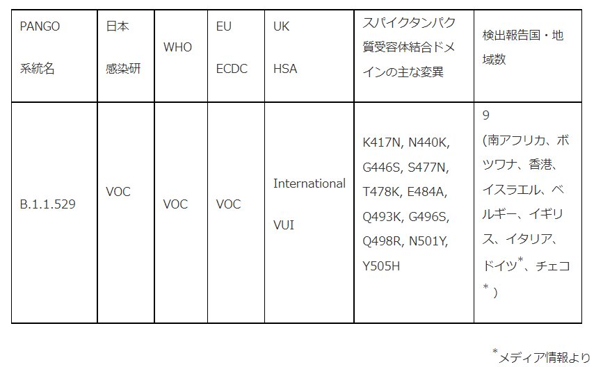

nature > news > article
Nature
大きく変異したオミクロン変異体は科学者を警戒させる
研究者は、急速に広がるコロナウイルス変異体がCOVIDワクチンの有効性に脅威を与えるかどうかを判断するために競争しています。
NEWS 25 November 2021, Update 27 November 2021
南アフリカの研究者は、COVID-19を引き起こすSARS-CoV-2コロナウイルスの新しい変異体の上昇に関する追跡に取り組んでいます。この変異体は、デルタを含む他の変異に見られる多数の突然変異を抱えており、南アフリカ全土に急速に広がっているようだ。
最優先事項は、それが広がるにつれて、より密接に変種に従することです:それは今月初めにボツワナで最初に特定され、その後、南アフリカから香港に到着する旅行者に現れました。科学者はまた、ワクチンによって引き起こされる免疫応答を回避できるかどうか、他の変異体よりも多かれ少なかれ重篤な疾患を引き起こすかどうかなど、変異体の特性を理解しようとしています。
「私たちはワープスピードで飛んでいます」と、南アフリカのヨハネスブルグにあるウィットウォーターズランド大学のウイルス学者ペニー・ムーアは言います。再感染や予防接種を受けた人の症例の逸話的な報告がありますが、「現段階では何かを伝えるには早すぎる」とムーアは付け加えます。
南アフリカのダーバンにあるクワズール・ナタール大学の感染症医、リチャード・レッセルズ氏は、11月25日に南アフリカの保健局が主催した記者会見で、「この変種について理解していないことはたくさんある」と述べた。「突然変異プロファイルは私たちに懸念を与えますが、今、我々はこの変異体の重要性とパンデミックへの応答のために何を意味するのかを理解するために作業を行う必要があります。
11月26日、世界保健機関(WHO)は、SARS-CoV-2ウイルス進化に関するWHOの技術諮問グループの一員である科学者の助言に基づいて、B.1.1.529として知られるこの株を懸念の変種として指定し、オミクロンと名付けました。Omicronは、現在のWHOの懸念のリストにデルタ、アルファ、ベータ、ガンマに加わります。
研究者はまた、世界的に広がる亜種の可能性を測定したいと考えています - おそらく新たな感染の波を引き起こしたり、デルタによって駆動されている継続的な上昇を悪化させます。
【スパイクへの変更】
研究者は、ボツワナのゲノムシーケンシングデータでB.1.1.529を発見しました。この変異体は、スパイクタンパク質に30以上の変化(宿主細胞を認識し、身体の免疫応答の主な標的であるSARS-CoV-2タンパク質)を含んでいるため、際立っていました。変化の多くはデルタやアルファなどの変異体に見られ、感染性の高まりと感染遮断抗体を回避する能力に関連しています。
ヨハネスブルグの本拠地である南アフリカのハウテン州の変種のケースの明らかな急激な上昇も、警鐘を鳴らしています。レッセルズによると、11月に同州で、特に学校や若者の症例が急速に増加した。クワズール・ナタール大学の生物情報学者トゥリオ・デ・オリベイラ率いるチームのゲノムシーケンシングやその他の遺伝子解析は、B.1.1.529変異体が11月12日から20日の間に収集したハウテンから分析したウイルスサンプルの77すべてを担当していることを発見した。何百ものより多くのサンプルの分析が行われています。
この変異体は、ゲノムシーケンシングよりもはるかに迅速に結果を提供する遺伝子型入力テストによって検出できるスパイク突然変異を抱えている、とLessells氏は述べた。これらの試験からの予備的証拠は、B.1.1.529がハウテンよりもかなり広がっていることを示唆している。「この変種がすでに国内で非常に広く流通しているかもしれないという懸念を与えてくれます」と、レッセルズは言いました。
【ワクチンの有効性】
B.1.1.529がもたらす脅威を理解するために、研究者は南アフリカおよびそれ以降の広がりを綿密に追跡します。南アフリカの研究者は、2020年後半にそこで同定されたベータバリアントを迅速に研究する取り組みを動員し、同様の取り組みがB.1.1.529を研究し始めています。
ベータ版の免疫を回避する能力に関する最初のデータを提供したムーアのチームは、すでにB.1.1.529で作業を開始しています。彼らは、感染遮断抗体を回避するウイルスの能力だけでなく、他の免疫応答をテストする予定です。この変異体は、抗体が認識するスパイクタンパク質の領域に多数の突然変異を抱え、その効力を低下させる可能性がある。「私たちが知っている多くの突然変異は問題ですが、より多くの突然変異がさらなる回避に寄与している可能性が高いように見えます」とムーアは言います。B.1.1.529がT細胞と呼ばれる免疫系の別の成分によって与えられた免疫をかわすことができるというコンピュータモデリングからのヒントさえあるとムーアは言います。彼女のチームは2週間後に最初の結果を出したいと考えています。
「燃えるような問題は、『ワクチンの有効性を減らすのか、それは非常に多くの変化を持っているので』です」と、英国オックスフォード大学でウイルス進化を研究しているアリス・カツォラキスは言います。ムーアは、ジョンソン・エンド・ジョンソン、ファイザー・バイオンテック、オックスフォード・アストラゼネカから、そこで使用されている3種類のワクチンのいずれかを受けた人々の間で南アフリカで画期的な感染症が報告されていると言います。報道によると、この変異体に陽性反応を示した香港の2人の検疫された旅行者は、ファイザージャブで予防接種を受けた。一人の個人が南アフリカから旅行しました。もう一つは、ホテルの隔離中に感染しました。
南アフリカの研究者はまた、B.1.1.529が他の変異体によって産生されるものよりも重篤または軽度の疾患を引き起こすかどうかを研究すると、Lessellsが言いました。「本当に重要な問題は、病気の重症度に関するものです。
これまでのところ、南アフリカを超えてB.1.1.529がもたらす脅威は決して明らかではない、と研究者は言う。また、南アフリカではCOVID-19症例数が少ないため、この変異体がデルタよりも伝染性があるかどうかも不明である、とムーアは言う。「私たちは小康状態です」と彼女は言います。カツォラキスは、デルタ航空が非常に普及している国は、B.1.1.529の兆候を見守るべきだと言います。「我々は、このウイルスが競争上の成功の面で何をするか、それが有病率の増加するかどうかを見る必要があります。
DOI:https://doi.org/10.1038/d41586-021-03552-w
アップデートと修正
更新 2021年11月27日:この話には、世界保健機関(WHO)がバリアントOmicronを命名し、懸念の変種として指定したことが含まれています。
doi: 10.1126/science.acx9721
Science
サイエンスインサイダー
「忍耐は非常に重要です」:なぜ私たちはオミクロンがどれほど危険であるかを何週間も知らないのか
ラボテストとスプレッドのパターンは、新しいSARS-CoV-2変異体の多くの突然変異が深刻な脅威であるかどうかを示します
2021年11月27日 4:35 PM by KAI KUPFERSCHMIDT
水曜日の午前7時30分.m、サンディエゴのスクリプス・リサーチの感染症研究者クリスティアン・アンダーセンは、Slackに関するメッセージを受け取りました:「この変種は完全に非常識です。エディンバラ大学のアンドリュー・ランボーは、11月11日にボツワナで採取された3つのサンプルで見つかった新しいSARS-CoV-2ゲノム配列に反応し、1週間後に南アフリカから香港への旅行者で拾いました。
アンデルセンはデータを見て、「聖なるたわごと、それはかなりのものです。その枝の長さ。数分後、彼は次のように付け加えました:「ちょうど突然変異のリストを見て、とてもナッツ。
彼らは現在、懸念の新しい変異体であるOmicronと呼ばれるものについて話していましたが、アンダーセンが気づいた長い枝は、SARS-CoV-2の進化木上の他のすべての既知のウイルスへの距離を指します。この変異体は何十もの突然変異を拾ったようで、その多くは免疫を回避したり、透過性を高める上で重要であることが知られており、何百万ものウイルスゲノムのデータベースに中間配列が含われなかった。火曜日、グローバルデータベースで奇妙なシーケンスを見つけた後、インペリアル・カレッジ・ロンドンのウイルス学者トム・ピーコックは、すでにGitHubに「これは本当の懸念事項かもしれない」という彼自身の評決を投稿していました。
今、もう一度、世界は研究者が人類のために新しい変種が何を持っているかを学ぶために夜と週末に働くように見ています。オミクロンはより感染性がありますか?より致命的?回復した人に再感染する方が良いですか?ワクチンによる免疫をどのくらいうまく回避しますか?そして、それはどこから来たのですか?見つけるには時間がかかり、ウェルカム・トラストのジェレミー・ファラー代表は「忍耐が重要だと思う」と警告する。
南アフリカの研究者はすでにこの新しい変種の道を歩んでいました。いくつかのチームは、ヨハネスブルグとプレトリアを含む北部のハウテン州で事件が急増した理由を独自に把握しようとしていました。 そして、ランセットと呼ばれる民間の研究室は、SARS-CoV-2の定期的なPCRテストが主要な標的であるS遺伝子を検出できなかったことに気づきました。ランセットがこれらのウイルスの8つから配列を取ったとき、彼らは理由を知りました:ゲノムは非常に激しく変異していたので、テストは遺伝子を見逃しました。
ランセットは、火曜日に緊急会議を呼び出した南アフリカのゲノミクス監視ネットワーク(NGS-SA)とゲノムを共有しました。「私たちは突然変異の数にショックを受けました」と、クワズール・ナタール大学のウイルス学者でNGS-SAの主任研究者であるトゥリオ・デ・オリベイラは言います。会議の後、デ・オリベイラは南アフリカの保健局長に電話し、「潜在的な新しい変種が出現していることを大臣と大統領に知らせるよう彼に頼んだ」と言います。チームは、次の24時間でハウテンから別の100の無作為に選択されたシーケンスをシーケンスしました。すべてが同じパターンを示した。政府に知らせた後、デ・オリベイラたちは木曜日の朝の記者会見で証拠を発表した。金曜日、世界保健機関(WHO)はウイルスを「懸念の変種」に指定し、オミクロンを洗礼しました。(バリアント名はギリシャ語のアルファベットに従いますが、WHOはNuとXiの文字をスキップし、「Nuは『新しい』とあまりにも簡単に混乱し、Xiは一般的な姓であるため使用されなかった」と述べています。
Omicronに関する懸念の理由の1つは、配列配列されたサンプルが南アフリカの他の変異体を急速に置き換えたことを示しているということです。しかし、その絵は歪んでいるかもしれません。一つには、シーケンシングは、ここ数日で新しい変異体の可能性のあるケースに焦点を当てており、それよりも頻繁に表示される可能性があります。PCRデータは、より広いカバレッジと偏った視野を提供しますが、S遺伝子の不全を有するサンプルも、Omicronの急速な上昇を示しています。
しかし、周波数の上昇はまだ偶然の一部に起因する可能性があります。サンディエゴでは、大学での一連のスーパースプレッディングイベントは、今年初めにSARS-CoV-2の1つの特定の株の爆発をもたらしました:「それは何千もの症例であり、それらはすべて同じウイルスでした」とアンダーセンは言います。しかし、ウイルスは特に感染性が高くありませんでした。南アフリカでは最近比較的少ない症例が見られるため、一連の超拡散イベントがオミクロンの急速な増加につながった可能性があります。「私は、その信号の多くがそれによって説明されているのではないかと思うし、私は必死にそう願っています」と、アンダーセンは言います。異なるオミクロンゲノムの比較に基づいて、アンダーセンはウイルスが9月下旬または10月上旬頃に出現したと推定しており、これはそれが見えるよりもゆっくりと広がっている可能性を示唆している。
もう一つの懸念の理由は、オミクロンの紛らわしいゲノムです。ヒト受容体上の細胞にラッチするスパイクタンパク質は、元の武漢ウイルスとは30アミノ酸の違いがある。また、アミノ酸は3か所で消失し、新しいアミノ酸が1か所に出現しました。(他のタンパク質も変化を経験しています。スパイクの変化の多くは、受容体結合ドメインの周りにあり、ヒト細胞と接触するタンパク質の一部である。「それは非常に厄介です」とファラーは言います。昨年の構造生物学マッピングは、これらの変化の一部がウイルスを受容体にはるかに良く結合させたことを示した。
ウイルスが突然変異だけに基づいていることを見分けるのは難しいと、オックスフォード大学の進化生物学者アリス・カツォラキスは言う。「しかし、透過性に影響を与える突然変異を探していた場合、それはすべてを持っています」と、彼は言います。
この配列はまた、ウイルスがヒト抗体の回避に優れている可能性を示唆している、とフレッド・ハッチンソンがん研究センターの進化生物学者ジェシー・ブルームは言う。ヒト免疫系はSARS-CoV-2を中和できる多数の異なる抗体を産生するが、最も重要なものの多くは、それぞれ1、2、3と呼ばれるウイルスのスパイクタンパク質上のわずかに異なる部位を標的とする3つのカテゴリーに分類される。E484Kと呼ばれる突然変異は、クラス2抗体が認識する部位の形状を変化させ、より強力でなくなるので、長い間心配してきました。Omicronは、この部位にE484Aと呼ばれる突然変異を運び、他の2つのクラスの抗体の部位に同様の変化を伴う。
ブルームは、COVIDから回復した人や予防接種を受けた人がウイルスを中和する能力を完全に失う可能性は低いと考えています。「しかし、この特定の突然変異の組み合わせに基づいて、中和の低下は他のすべての主要な変異体よりも大きいと思います。
研究室での実験は、彼が正しいかどうかを示す必要があります。アフリカ保健研究所の感染症研究者アレックス・シガルは、水曜日にオミクロンで綿棒を受け取り、ウイルスを増殖させ始めたと言います。予防接種を受け、回復した個人からセラに対してテストするのに十分な量を生産するには、1〜2週間かかると、彼は言います。他の研究者は、Omicronのスパイクタンパク質のみを運ぶために遺伝子操作されたウイルスをテストします, 変異体自体を成長させるよりも速いプロセスが、実際の生活の中で何が起こるかから少し離れたプロセス.
このような研究が行われるにつれて、パンデミックの変化を注意深く監視することが重要だとFarrar氏は述べています。「南アフリカだけでなく、より広範な南アフリカ地域で症例が増加しているのを見ますか?このウイルスはすでにベルギー、英国、イスラエルで取り上げられており、ファラーは指摘しており、おそらく他の場所でも見つかるだろうと述べている。「推定インデックスケースの周りの世界の他の地域で伝送が増加しているのを見ますか?疫学者は、病気の重症度の変化、つまり入院して死亡する人の数も監視します。すべては時間がかかります。
一方、欧州連合(EU)、米国、その他多くの国は、自らを守るためにアフリカ南部との間の渡航を制限している。旅行制限は変種を止める可能性は低い、とFarrarは言うが、彼らはいくつかの時間を買うことができる。「問題は、あなたが時間で何をするかです。
旅行制限には経済的および社会的コストが伴い、新しい変種を報告する妨げになる可能性があります。ベルン大学のウイルス学者エマ・ホドクロフトは、「ブドウ畑を通して、各国は旅行禁止を心配していたので、(過去に)シーケンスをあまり速く押し出さなかったと聞きました」と言います。「これは私たちが望むものとは正反対です。
このような考慮事項は、南アフリカの研究者を止めなかったと、デオリベイラは言います。「我々は、(Omicronが)感染の大規模な波を引き起こせず、制御することができる場合に備えて、大規模な反発を危険にさらす」と、彼はメッセージに書いた。しかし、これはパンデミックが非常に多くの死と苦しみを引き起こしたので、私は快適に一緒に暮らすリスクです。私たちの希望は、私たちの早期の識別が世界を助けてくれるということです。
WHOは2021年11月24日にB.1.1.529<系統を監視下の変異株（Variant Under Monitoring; VUM）に分類したが(WHO. Tracking SARS-CoV-2 variants）、同年11月26日にウイルス特性の変化可能性を考慮し、「オミクロン株」と命名し、懸念される変異株（Variant of Concern; VOC）に位置づけを変更した(WHO. Classification of Omicron (B.1.1.529)。同じく、欧州CDC（ECDC）も、11月25日時点では同株を注目すべき変異株（Variant of Interest; VOI）に分類していたが(ECDC. SARS-CoV-2 variants of concern as of 25 November 2021)、11月26日にVOCに変更した(ECDC. Threat Assessment Brief)。
2021年11月26日、国立感染症研究所は、PANGO系統でB.1.1.529系統に分類される変異株を、感染・伝播性、抗原性の変化等を踏まえた評価に基づき、注目すべき変異株（VOI）として位置づけ、監視体制の強化を開始した。2021年11月28日、国外における情報と国内のリスク評価の更新に基づき、B.1.1.529 系統（オミクロン株）を、懸念される変異株（VOC）に位置付けを変更する。
表 SARS-CoV-2 B.1.1.529系統（オミクロン株）の概要

オミクロン株は基準株と比較し、スパイクタンパク質に30か所のアミノ酸置換（以下、便宜的に「変異」と呼ぶ。）を有し、3か所の小欠損と1か所の挿入部位を持つ特徴がある。このうち15か所の変異は受容体結合部位（Receptor binding protein; RBD; residues 319-541）に存在する(ECDC. Threat Assessment Brief)。
オミクロン株に共通するスパイクタンパク質の変異のうち、H655Y、N679K、P681HはS1/S2フリン開裂部位近傍の変異であり、細胞への侵入しやすさに関連する可能性がある。nsp6における105-107欠失はアルファ株、ベータ株、ガンマ株、ラムダ株にも存在する変異であり、免疫逃避に寄与する可能性や感染・伝播性を高める可能性がある。ヌクレオカプシドタンパク質におけるR203K、G204R変異はアルファ株、ガンマ株、ラムダ株にも存在し、感染・伝播性を高める可能性がある(Department Health, South Africa. SARS-CoV-2 Sequencing & New Variant Update 25）。
2021年11月27日時点で、南アフリカで77例(Department Health, South Africa. SARS-CoV-2 Sequencing & New Variant Update 25)、ボツワナで4例(Department Health, South Africa. SARS-CoV-2 Sequencing & New Variant Update 25)、香港で2例(CHP investigates six additional confirmed cases of COVID-19 and provides update on latest investigations on imported cases 12388 and 12404)、イスラエルで１例（Government of Israel）、ベルギーで１例（Genomic surveillance of SARS-CoV-2 in Belgium Report of the National Reference Laboratory）、英国で２例（First UK cases of Omicron variant identified）、イタリアで１例（GISAID accessed on Nov. 28）、ドイツで２例（Two Omicron coronavirus cases found in Germany）、チェコで１例（Omicron: Hospital confirms first Czech case of new Covid strain）が確認されている。
南アフリカにおいては、ハウテン州のCOVID-19患者数が増加傾向にある(New COVID-19 variant detected in South Africa – NICD, LATEST CONFIRMED CASES OF COVID-19 IN SOUTH AFRICA (25 November 2021) - NICD)。 南アフリカでは、公共の場での常時のマスク着用、夜間の外出禁止、飲食店の時短営業、集会の人数制限、酒類の夜間販売停止等の対策が継続されていた(Disaster management act, 2002: Amendment of regulations issued in terms of section 27 (2))。
南アフリカハウテン州で2021年11月12 日から20日までに採取された77検体すべてがB.1.1.529系統であった(Heavily mutated coronavirus variant puts scientists on Alert. Nature. 25 November 2021.)。他に100例以上の関連症例の存在が示唆されている(Urgent briefing on latest developments around the Covid-19 vaccination programme)。11月以降に遺伝子配列が決定された新型コロナウイルスの検出割合では、B.1.1.529系統が増加傾向で、2021年11月15日時点では75％以上を占めていた（Urgent briefing on latest developments around the Covid-19 vaccination programme）。
南アフリカにおいて、SGTF（後述：評価―「診断への影響」の項を参照）を利用したPCR検査では、11月中旬よりほとんどの地方で（オミクロン株と想定される）SGTFの検出が急増しており、特に、ハウテン州では、直近数日の間に50％以上の株がSGTFとなっている(ECDC; Threat Assessment Brief: ECDC, DOH RSA. SARS-CoV-2 Sequencing & New Variant Update 25)。
香港で報告された2症例のうち1例は2回のワクチン接種歴があり、10月下旬から11月にかけて南アフリカへの渡航歴があり、症状はなかった(CHP investigates six additional confirmed cases of COVID-19 and follows up on compulsory quarantine arrangement concerning three imported cases involving local air crew)。別の1例はカナダからの帰国者で、2回のワクチン接種歴があり、上記の症例と同じ検疫隔離用ホテルの向かいの部屋に滞在しており、発症を契機に検査を受け、陽性が判明した(CHP investigates three additional confirmed cases of COVID-19)。この２症例が滞在した２つの部屋と、同じ階の廊下と共用エリアの環境から検体が採取され、87検体中25検体が陽性であった。これらの陽性検体はいずれも陽性者２例が滞在した部屋から採取されたものであった (CHP provides update on latest investigations on COVID-19 imported cases 12388 and 12404)。
香港衛生署衛生防護中心 (Centre for Health Protection, CHP)の発表によると、南アフリカからの帰国者症例がサージカルマスクを着用せずにホテルの部屋のドアを開けた際に、別の1例が感染した可能性があるとしている（CHP provides update on latest investigations on COVID-19 imported cases 12388 and 12404)。CHPは症例が滞在した居室の左右隣3部屋に滞在していた者を隔離した。現在のところ、さらなる症例は報告されていない(CHP investigates six additional confirmed cases of COVID-19 and provides update on latest investigations on imported cases 12388 and 12404, CHP provides update on latest investigations on COVID-19 imported cases 12388 and 12404)。
ボツワナで報告された４例は渡航者であり、2021年11月11日にボツワナから出国する際の検疫で探知された（Botswana Government）。ボツワナから初期にGISAIDに登録された５検体は、南アフリカからGISAIDに登録された株との関連が示唆される(Genomic surveillance of SARS-CoV-2 in Belgium Report of the National Reference Laboratory *)。ただし、アフリカ地域において、最近30日以内にGISAIDに遺伝子配列を登録している国は、ボツワナと南アフリカのみである（ECDC; Threat Assessment Brief）。
イスラエルで報告された１例は、マラウイから帰国したワクチン接種歴のある症例であった。その他、イスラエル国外からの帰国者2例が疑い例として検査を受けており、現在隔離されている (Government of Israel)。
ベルギーからは、トルコ経由でエジプトから渡航した若年女性１例が報告された。この症例は、ワクチン接種歴がなく、過去の感染歴は確認されていない。この症例で、南アフリカやアフリカ南部地域への渡航歴は確認されていない。現在、この症例は、インフルエンザ様の症状があるが重症ではない（Genomic surveillance of SARS-CoV-2 in Belgium Report of the National Reference Laboratory ）。
英国から2021年11月27日に報告された２症例は互いに関連があり、また南アフリカ渡航への関与が確認された。2症例の家族は検査を実施した上で自主隔離が要請されている。現在、この２症例の接触者調査が進行中である（First UK cases of Omicron variant identified）。
ゲノムサーベイランスでは、国内及び検疫検体にB.1.1.529系統に相当する変異を示す検体は検出されていない（2021年11月27日時点）。
評価
オミクロン株については、ウイルスの性状に関する実験的な評価はまだなく、また、疫学的な評価を行うに十分な情報が得られていない状況である。年代別の感染性への影響、重篤度、ワクチンや治療薬の効果についての実社会での影響、既存株感染者の再感染のリスクなどへの注視が必要である。
感染・伝播性への影響
南アフリカにおいて流行株がデルタ株からオミクロン株に急速に置換されていることから、オミクロン株の著しい感染・伝播性の高さが懸念される(WHO: Classification of Omicron (B.1.1.529) , ECDC; Threat Assessment Brief)。
免疫への影響
オミクロン株の有する変異は、これまでに検出された株の中で最も多様性があり、感染・伝播性の増加、既存のワクチン効果の著しい低下、及び再感染リスクの増加が強く懸念される (ECDC; Threat Assessment Brief) 。
スパイクタンパク質へ実験的に変異を20ヶ所入れた合成ウイルスを用いた実験で、既感染者及びワクチン接種者の血清で高度な免疫逃避が確認されたとする報告がある。オミクロン株においても、このような多重変異によるワクチン効果の低下及び再感染の可能性が懸念される（High genetic barrier to SARS-CoV-2 polyclonal neutralizing antibody escape. Nature.）。
重篤度への影響
現時点では重篤度の変化については、十分な疫学情報がなく不明である。
診断への影響
国立感染症研究所の病原体検出マニュアルに記載のPCR検査法のプライマー部分に変異は無く、検出感度の低下はないと想定される。
オミクロン株は国内で現在使用されるSARS-CoV-2PCR診断キットでは検出可能と考えられる。
Thermo Fisher社TaqPathにおいて採用されているプライマーにおいて、ORF1, N, S遺伝子のPCRでS遺伝子が検出されない（S gene target failure; SGTFと呼ばれる）特徴をもつ。一方で、これまで多くの国で流行の主体となっているデルタ株ではS遺伝子が検出されることから、この特徴を利用し、オミクロン株の代理マーカーとして、SGTFが利用できる(WHO: Classification of Omicron (B.1.1.529) )。SGTFはアルファ株でもみられ、代理マーカーとして使用された。
抗原定性検査キットについては、ヌクレオカプシドタンパク質の変異の分析で診断の影響はないとされるが、南アフリカ政府において検証作業が進められている。（NCID: Frequently asked questions for the B.1.1.529 mitated SARS-CoV-2 lineage in South Africa）
疫学的拡大状況
南アフリカにおけるハウテン州を含めた多くの地域での急速な感染拡大については、イベント等による人々の社会的接触機会の増大や、他の変異株の影響等の要因も排除できない。南アフリカではウイルスの遺伝子配列決定数は感染者数に対して僅かであり、また地域差もあることを考慮して解釈する必要がある。南アフリカでの感染者数の急増における本変異株の寄与の程度はまだ明らかではないが、ほとんどの地方でSGTF検出が急速に増加していること、ボツワナやマラウイからの渡航者で症例が確認されていることを考慮するとオミクロン株が南部アフリカ地域で増加している可能性が高い。
症例が報告されていないエジプトからの渡航者における輸入例が検出されていること、またアフリカ地域においてゲノムサーベイランスが十分に実施されていない国もあることを考慮すると、他のアフリカ地域でも、すでにオミクロン株による感染が拡大している可能性がある。
南部アフリカ地域との人の往来の多い国においては、探知されていない輸入例が発生している可能性がある。さらに、それらの国でゲノムサーベイランスの質が十分でない場合はオミクロン株による感染拡大の程度が過少評価されている可能性がある。
ゲノムサーベイランス上は、B.1.1.529系統と想定されるウイルスの検疫・国内検出例はまだなく、現時点で国内でのオミクロン株による感染拡大を示唆する所見はない。日本では、オミクロン株による症例の発生が報告されている地域との人の往来は限定的であるものの、今後国内で検知される可能性はありうる。引き続きゲノムサーベイランスで検疫・国内での監視を行う。
基本的な感染対策の推奨
個人の基本的な感染予防策としては、変異株であっても、従来と同様に、３密の回避、特に会話時のマスクの着用、手洗いなどの徹底が推奨される。